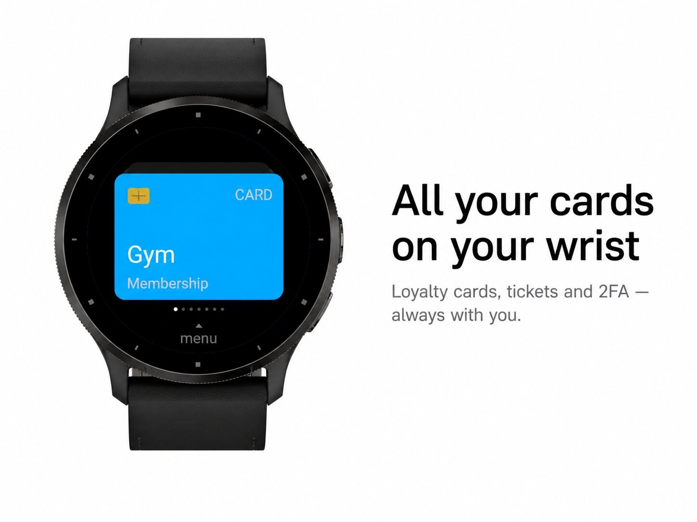
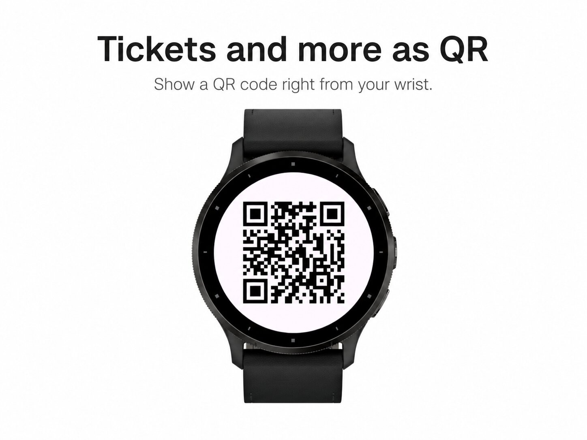
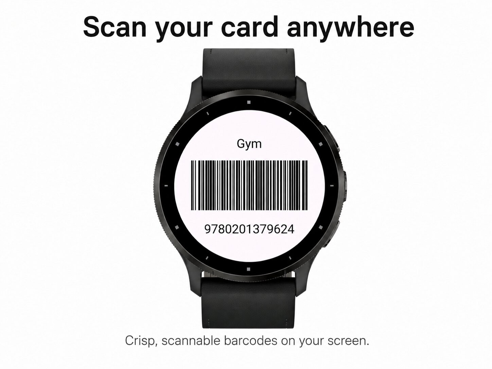
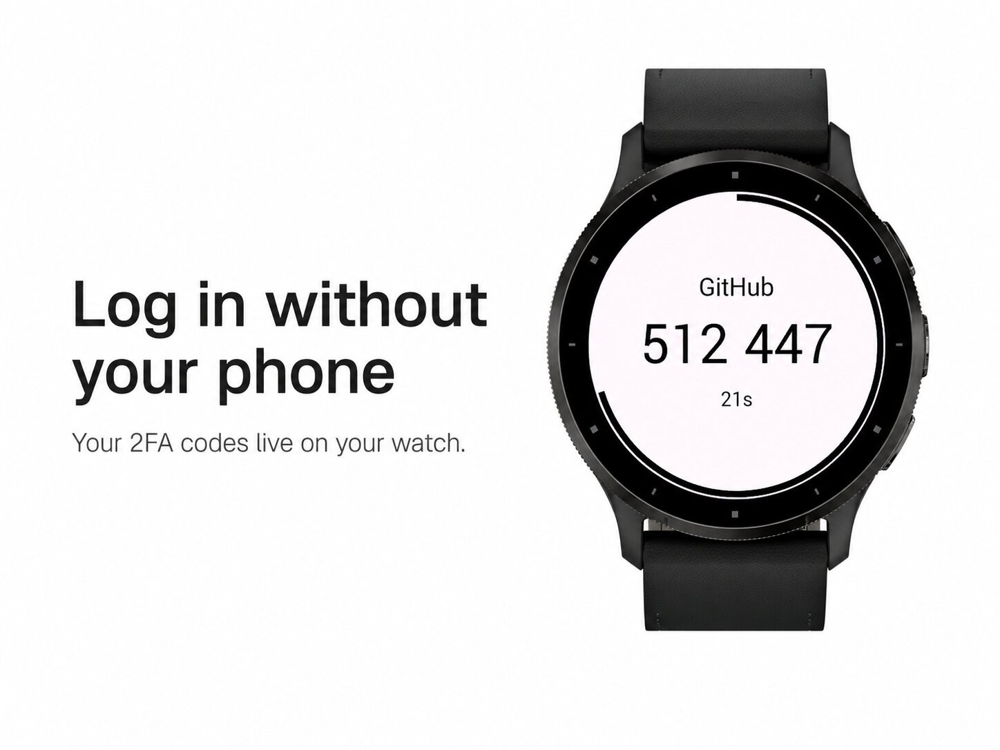
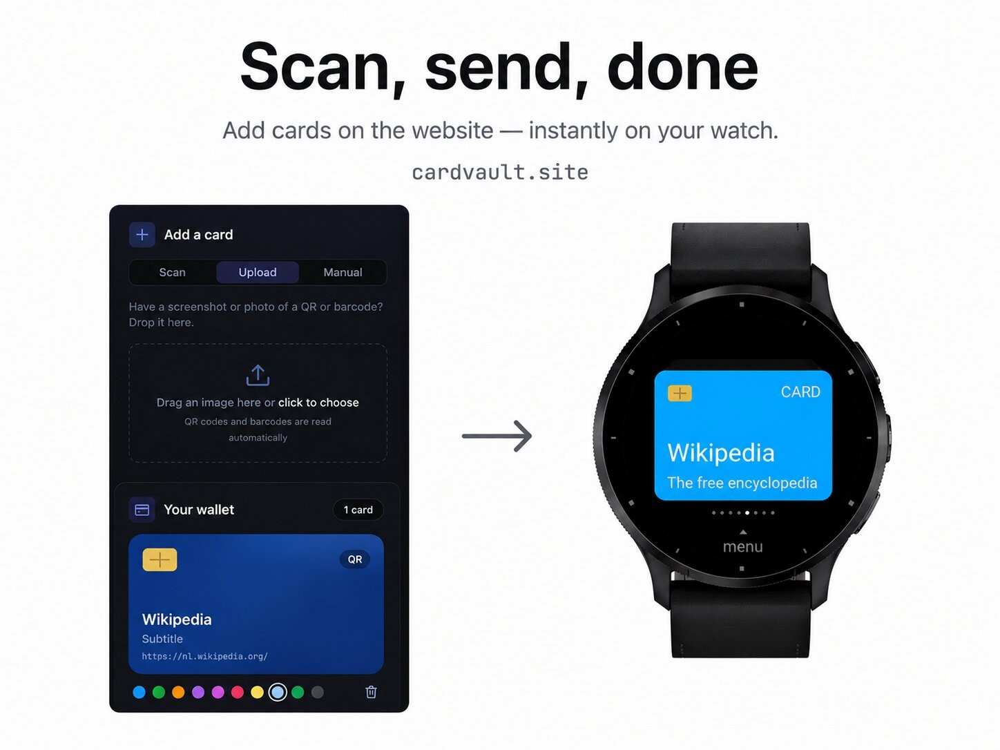

Everyday tools · Device app
Loyalty cards, tickets and 2FA codes.





CardVault – Cards, Tickets & 2FA
All your loyalty cards, tickets and two-factor codes — right on your watch. Leave your phone in your pocket.
What you can store
Built for speed
Open the app, swipe to your card, and show it at the counter, the gym, the library or the login screen. Your favourite card is always first.
Easy to add — no typing
Add cards on the free companion website: scan with your camera, upload a screenshot, or import all your Google Authenticator accounts at once. Send them to your watch with a single pairing code — new cards appear automatically. Prefer no server? Paste them straight into the app settings in Garmin Connect instead.
Your data stays yours
Everything is processed locally. No account, no tracking. Card data used for syncing is kept for at most 30 minutes and then deleted. Lock the app with an optional PIN.
Manage on your watch
Rename cards, change their colour, mark favourites or delete them — all without your phone.